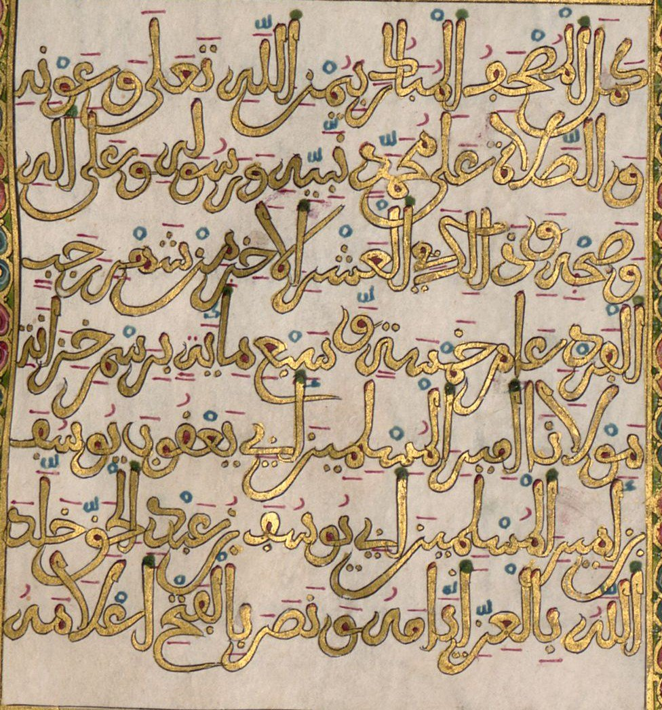
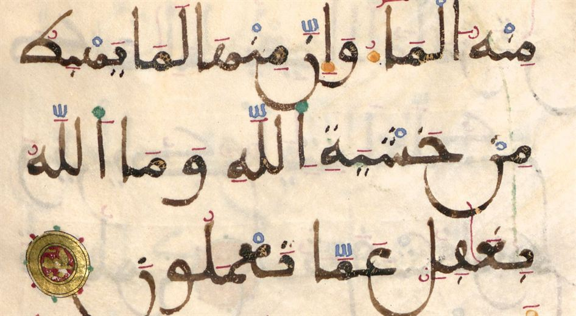
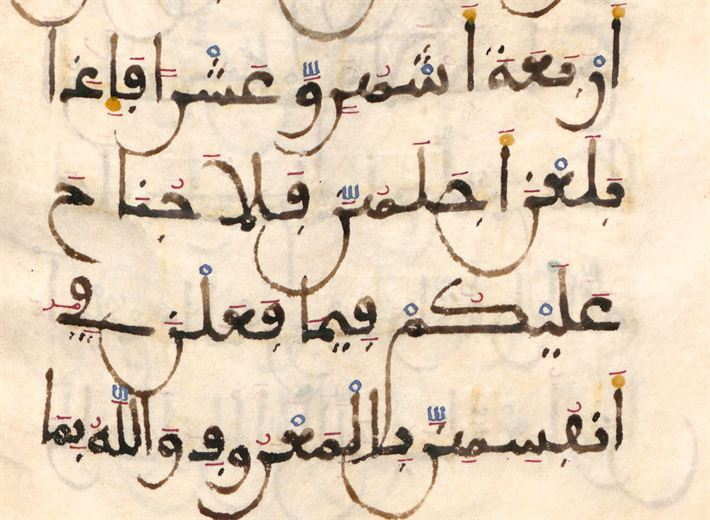
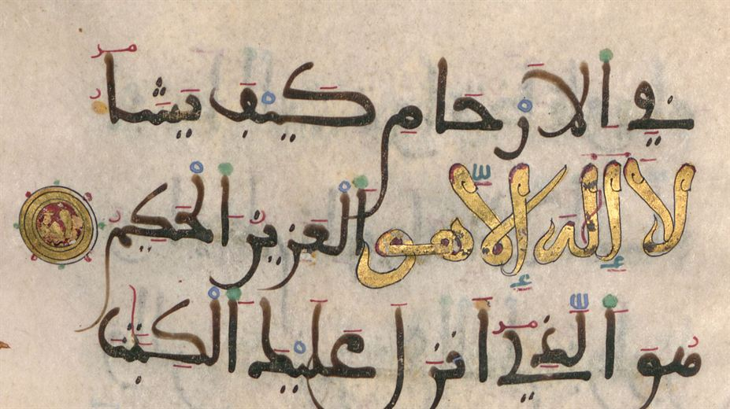
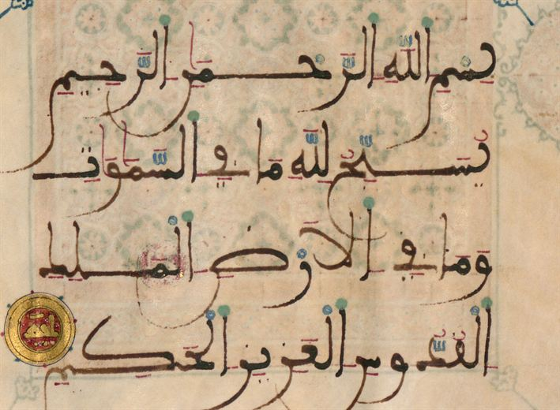
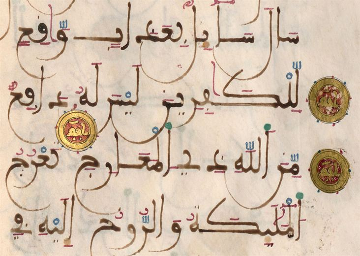
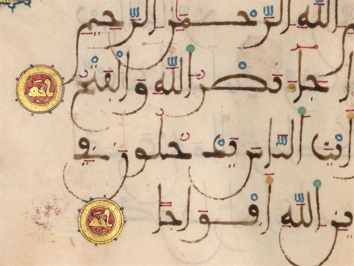
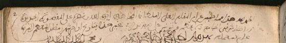

مصحف خزانة السلطان أبي يعقوب يوسف
- الصاحب
- كُتب «برسم خزانة» السلطان أبي يعقوب يوسف بن يعقوب (حكم 685–706هـ / 1286–1307م)، كما تنص الخاتمة
- الناسخ
- لم يُذكر اسمه في الخاتمة. أما «أحمد بن الحسن الكاتب المحسن» الذي ذكره ابن خلدون فهو ناسخ مصحف آخر لأبي يعقوب، هو ربعة مكة سنة 703هـ (انظر المفقودات)
- المكان
- المغرب المريني (لم تذكر الخاتمة المدينة)
- اليوم
- ميونخ، مكتبة الدولة البافارية: Cod.arab. 2 (الجزء الأول) وCod.arab. 3 (الجزء الأخير)
- الهيئة
- رقّ؛ 26 × 21.5 سم؛ سبعة أسطر في الصفحة
- ما بقي
- جزءان من اثني عشر: الأول (الفاتحة – آل عمران 14) في 122 ورقة، والأخير (الجمعة – الناس) في 115 ورقة
من أفخم المصاحف المغربية الباقية. كان في اثني عشر جزءاً، في كل جزء خمسة أحزاب، ولم يبق منه إلا الجزء الأول والجزء الأخير. وفي آخر الجزء الأخير خاتمة بالذهب في إطار مزخرف تذكر تاريخ الفراغ منه، وأنه كُتب لخزانة السلطان.
المتن بالمبسوط المغربي بمداد أسود في سبعة أسطر، والضبط بالألوان. وعناوين السور بالكوفي المذهب، وإلى جانب كل عنوان حلية مستديرة في الهامش. وكُتبت جملة «لا إله إلا هو» بالذهب حيث وردت في المتن، وللمصحف صفحات افتتاح وختام مذهبة.

الخاتمة (آخر الجزء الأخير، الورقة 121ظ)
كمل المصحف المبارك بيمن الله تعالى وعونه، والصلاة على محمد نبيّه ورسوله وعلى آله وصحبه، وذلك في العشر الأُخَر من شهر رجب الفرد عام خمسة وسبع مائة، برسم خزانة مولانا أمير المسلمين أبي يعقوب يوسف ابن أمير المسلمين أبي يوسف بن عبد الحق، خلّد الله بالعز أيامه، ونصر بالفتح أعلامه.
قراءتنا من صورة الورقة. «العشر الأُخَر» هي الأيام العشرة الأخيرة من رجب 705هـ، أي نحو 6–15 فبراير 1306م. و«برسم خزانة» تعني أنه كُتب ليُحفظ في مكتبة السلطان.
رحلة المصحف







